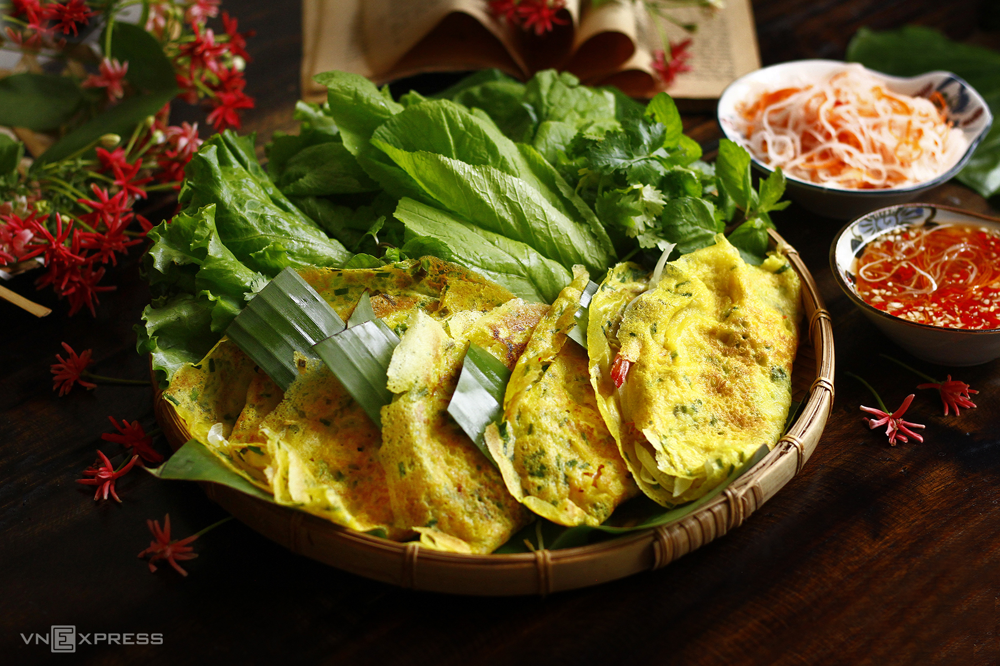

Món Việt
Món nhanh
• Đã duyệt
Bánh xèo miền Tây giòn rụm ăn kèm rau sống
Vỏ bánh mỏng vàng ruộm nhờ nước cốt dừa và bột nghệ tươi, ăn nóng ngay khi vừa vớt khỏi chảo.
- Chuẩn bị
- 25 phút
- Nấu
- 20 phút
- Khẩu phần
- 3 người
- Độ khó
- Dễ
- Tác giả · ngày đăng
- Chị Lan ·
Nguyên liệu
- Bột gạo
- 300 g
- Nước cốt dừa
- 200 ml
- Tôm sú
- 200 g
- Giá đỗ
- 150 g
- Hành lá
- 1 mớ
Các bước làm
- Hoà bột gạo với nước cốt dừa, thêm bột nghệ và hành lá cắt nhỏ, để bột nghỉ 20 phút cho vỏ bánh dai.
- Làm nóng chảo với chút mỡ, phi thơm hành, cho tôm thịt vào xào săn rồi múc một vá bột vào tráng mỏng đều lòng chảo.
- Rắc giá đỗ, đậy nắp 2 phút cho chín, mở nắp chờ vỏ bánh giòn rồi gấp đôi và xếp ra đĩa có lót rau sống.
Bình luận (2)
Mình pha thêm chút bia cho vỏ giòn lâu hơn, cả nhà khen ngon.
Nhà mình không có nước cốt dừa nên thay bằng sữa tươi, vẫn ổn ạ.
Đăng nhập để viết bình luận cho món này.